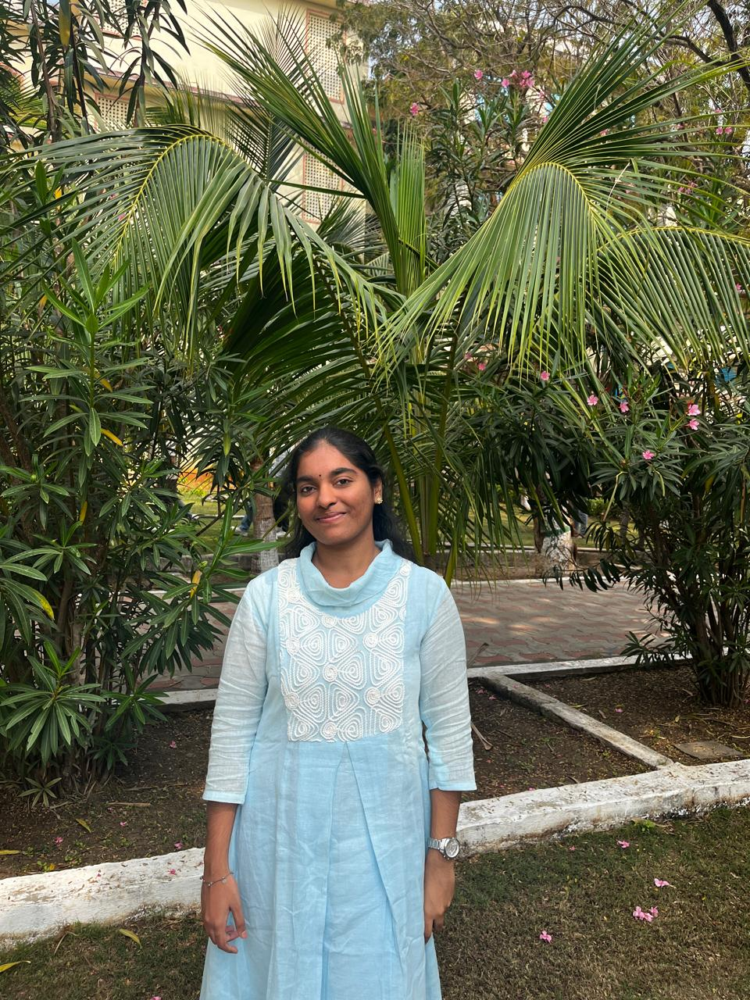

I’m an Artificial Intelligence and Machine Learning student who enjoys building technology that can observe, learn, and make decisions. My work sits at the intersection of machine learning, computer vision, deep learning, and software development, where I focus on turning ideas into practical, intelligent applications.
I have developed AI-driven projects using Python, TensorFlow, OpenCV, and Scikit-learn, and I’m particularly interested in solving real-world problems through data and automation. My research has also led to an IEEE conference publication on a self-attention-driven ResNet architecture for leaf disease detection, reflecting my interest in combining research with impactful engineering.
What excites me most is the process of experimenting, optimizing models, and continuously learning emerging AI technologies. I believe strong solutions come from curiosity, consistency, and the willingness to build beyond the classroom.
I’m currently seeking opportunities in AI/ML, software development, and intelligent systems where I can contribute technical expertise, collaborate with innovative teams, and create solutions that make a measurable difference.
TensorFlow, OpenCV, COCO Dataset
Created an AI-powered object detection system capable of identifying and localizing multiple objects within images using deep learning techniques. The project was built with TensorFlow and OpenCV, utilizing the COCO dataset to recognize more than 80 object categories.The model generates accurate bounding boxes, class labels, and confidence scores, providing clear visual detection results.
I used NumPy for image processing and Matplotlib for result visualization.This project strengthened my understanding of computer vision, deep learning, image processing, and model evaluation, and demonstrated how AI can be applied to real-world automation and intelligent surveillance systems.
Python, Pickle, Scikit-learn, Flask, Render
Developed a Salary Prediction Web Application by designing an end-to-end ETL pipeline that extracted, cleaned, transformed, and prepared salary data for predictive modeling. Engineered relevant features, handled missing values and categorical variables, and trained regression models using Scikit-learn to generate accurate salary predictions.
Built a Flask-based web interface that performs real-time inference on user inputs and deployed the application using GitHub and Render, creating a scalable and user-friendly machine learning solution.
Published in IEEE Xplore | ICICI 2026
I am pleased to share that my research paper, "Context-Aware Leaf Disease Detection Using a Self-Attention-Driven ResNet Architecture," has been published at an IEEE International Conference (2026).
This research focuses on developing an intelligent deep learning framework for the early detection of plant leaf diseases using computer vision techniques. The proposed model integrates self-attention mechanisms with a ResNet architecture to capture both local disease patterns and global contextual information, resulting in more accurate and robust disease classification under real-world agricultural conditions.
The work involved image preprocessing, data augmentation, model training, performance evaluation, and comparative analysis with baseline convolutional neural network models. The paper demonstrates how context-aware feature learning can improve classification accuracy and reduce misclassification caused by background noise, lighting variations, and complex field environments.
I’m driven by curiosity and the desire to create technology that solves real-world problems. From AI and Machine Learning to intelligent software systems, I enjoy transforming ideas into practical, impactful solutions through innovation, collaboration, and continuous learning. Meaningful conversations often lead to meaningful innovations.